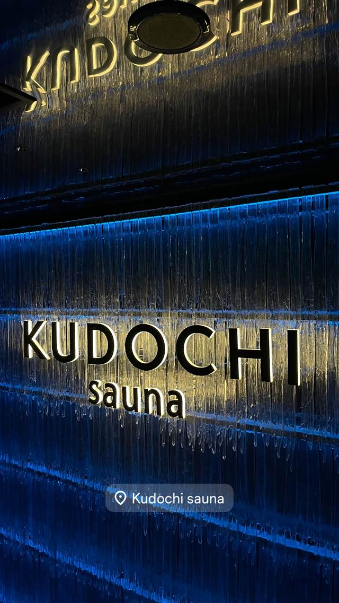

KUDOCHI sauna 銀座店
QRコードで解錠する非接触・非対面のチェックイン、部屋ごとに音楽・香り・明るさを調整できるセルフロウリュ
銀座にある完全個室のプライベートサウナ。QRコードで解錠する非接触チェックインが特徴で、部屋ごとに異なるセルフロウリュを自由に楽しめる。

TRIVIA
豆知識
- 受付なし、QRコード式の非接触・非対面チェックイン
- 部屋によって水風呂の温度やデザインが異なる
| 種類 | 完全個室サウナ（プライベートサウナ） |
|---|---|
| サウナ | 85℃前後、セルフロウリュ対応。全6室で部屋ごとにサウナ・水風呂の温度やデザインが異なる |
| 水風呂 | 14℃の水風呂 |
| 料金 | スタンダード90分6,000円〜（120分8,000円）、VIPルーム120分15,000円〜26,000円など、部屋タイプにより変動 |
| 営業時間 | 24時間営業、年中無休 |
| 場所 | 銀座駅／新橋駅 東京都中央区銀座8-8-5 陽栄銀座ビルB1 |
| 注意 | サウナ内装 / サウナ看板 |